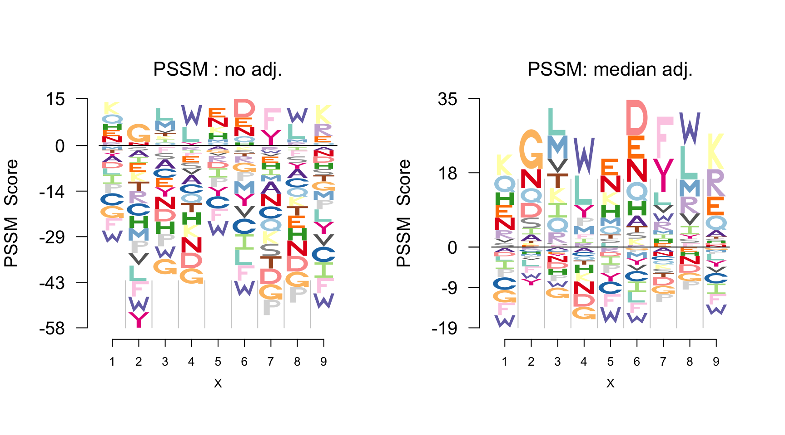

Character Symbol Logos
Protein Example
We first present an example of visualizing protein binding sites using Logolas where each character is represented by an English alphabet. Keeping with the flexibility to use any background, for the protein data example here, the background bg is set to uniform in panel (a) and to the amino acid composition from BLOSUM62 in panel (b).
library(Logolas)
library(grid)
counts_mat <- rbind(c(0, 0, 100, 1, 2), c(4, 3, 30, 35, 2),
c(100, 0, 10, 2, 7),rep(0,5),
c(4, 2, 3, 7, 70), c(1, 8, 0, 60, 3),
rep(0, 5), c(4, 2, 100, 1, 1),
c(12, 8, 16, 7, 20), c(55, 0, 1, 0, 12),
rep(0,5), c(rep(0,3), 20, 0),
rep(0,5), c(0, 0, 30, 0, 22),
c(1, 0, 12, 3, 10), rep(0,5),
c(0, 1, 0, 34, 1), c(0, 1, 12, 35, 1),
c(0, 30, 1, 10, 2), c(0, 1, 4, 100, 2))
rownames(counts_mat) <- c("A", "R", "N", "D","C", "E", "Q", "G",
"H", "I", "L", "K", "M", "F", "P", "S",
"T", "W", "Y", "V")
colnames(counts_mat) <- c("Pos 1", "Pos 2", "Pos 3", "Pos 4", "Pos 5")
cols1 <- c(rev(RColorBrewer::brewer.pal(12, "Paired"))[c(3,4,7,8,11,12,5,6,9,10)],
RColorBrewer::brewer.pal(12, "Set3")[c(1,2,5,8,9)],
RColorBrewer::brewer.pal(9, "Set1")[c(9,7)],
RColorBrewer::brewer.pal(8, "Dark2")[c(3,4,8)])
color_profile <- list("type" = "per_row",
"col" = cols1)
get_viewport_logo(1, 2)
seekViewport(paste0("plotlogo", 1))
logomaker(counts_mat,
color_profile = color_profile,
newpage = FALSE,
pop_name = "Uniform Background",
frame_width = 1)
seekViewport(paste0("plotlogo", 2))
logomaker(counts_mat,
color_profile = color_profile,
bg=c(0.074,0.052,0.045,0.054,0.025,0.034,0.054,0.074,0.026,0.068,0.099,0.058,0.025,0.047,0.039,0.057,0.051,0.013,0.034,0.073),
newpage = FALSE,
pop_name = 'BLOSUM background',
frame_width = 1)
PSSM plot
However for protein motif data, PWM is not always reported. Instead a derived score matrix called PSSM (Position specific scoring matrix) is often reported.
Logolas provides a function logo_pssm to plot the sequence logo based on the PSSM data. One can also apply median adjustment to the PSSM matrix like in plot.
get_viewport_logo(1, 2)
seekViewport(paste0("plotlogo", 1))
logo_pssm(pssm,
color_profile = color_profile,
control = list(quant = 0, gap_ylab = 3.5, round_off = 0),
newpage = FALSE,
pop_name = "PSSM : no adj.")
seekViewport(paste0("plotlogo", 2))
logo_pssm(pssm,
color_profile = color_profile,
control = list(quant = 0.5, gap_ylab = 3.5, round_off = 0),
newpage = FALSE,
pop_name = "PSSM: median adj.")